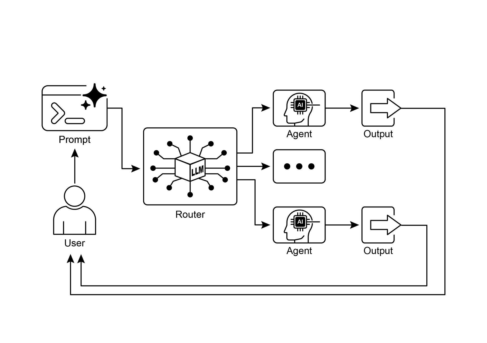

读书 · Agentic Design Patterns · 中英对照
第 2 章 · 路由 Routing
Chapter 2: Routing · 《Agentic Design Patterns》 · Antonio Gulli · 2025
本章讲如何用条件逻辑让智能体按输入或状态动态选择工具、子流程或子代理。
← 返回导读 原书 PDF 上一章:第1章 下一章:第3章
本章要点
① 路由为智能体引入条件逻辑，突破线性执行，实现动态决策 ① 实现方式有LLM提示、嵌入相似度、规则和训练分类器四种 ① 路由可发生在任务开始、处理中间或子程序选工具等多个节点 ① LangGraph用状态图显式定义路由，ADK靠工具与子代理自动委派
本章一图流
线性执行智能体按固定顺序走完流程→引入路由加入条件逻辑，按输入分叉→四种实现提示、嵌入、规则、分类器→多节点路由起点、中途、选工具均可分叉→框架落地LangGraph显式，ADK自动委派
路由用条件逻辑打破线性执行，让智能体在多个节点动态选择路径。
原书插图

本章划线句
划线句(逐字校验)
"Routing introduces conditional logic into an agent's operational framework, enabling a shift from a fixed execution path to a model where the agent dynamically evaluates specific criteria to select from a set of possible subsequent actions."
为什么值得划线:点明路由本质：用条件逻辑替代固定执行路径
划线句(逐字校验)
"Ultimately, routing provides the capacity for logical arbitration that is essential for creating functionally diverse and context-aware systems."
为什么值得划线:概括路由的价值：逻辑仲裁与上下文感知
划线句(逐字校验)
"Use the Routing pattern when an agent must decide between multiple distinct workflows, tools, or sub-agents based on the user's input or the current state."
为什么值得划线:给出何时该用路由模式的判断准则
正文(英中对照)
"While sequential processing via prompt chaining is a foundational technique for executing deterministic, linear workflows with language models, its applicability is limited in scenarios requiring adaptive responses. Real-world agentic systems must often arbitrate between multiple potential actions based on contingent factors, such as the state of the environment, user input, or the outcome of a preceding operation. This capacity for dynamic decision-making, which governs the flow of control to different specialized functions, tools, or sub-processes, is achieved through a mechanism known as routing."
尽管通过 prompt chaining（提示链）进行顺序处理是使用语言模型执行确定性线性工作流的基础技术，但其在需要自适应响应的场景中适用性有限。现实世界的 agentic 系统常常必须基于偶然因素（如环境状态、用户输入或前一操作的结果）在多个潜在动作之间进行仲裁。这种动态决策能力——它控制着流向不同专用函数、工具或子流程的控制流——是通过一种称为 routing（路由）的机制实现的。
导读注:指出 prompt chaining 的局限，引出 routing 作为动态决策的关键机制。
"Routing introduces conditional logic into an agent's operational framework, enabling a shift from a fixed execution path to a model where the agent dynamically evaluates specific criteria to select from a set of possible subsequent actions. This allows for more flexible and context-aware system behavior. For instance, an agent designed for customer inquiries, when equipped with a routing function, can first classify an incoming query to determine the user's intent. Based on this classification, it can then direct the query to a specialized agent for direct question-answering, a database retrieval tool for account information, or an escalation procedure for complex issues, rather than defaulting to a single, predetermined response pathway."
路由(Routing)将条件逻辑引入智能体的运行框架,使其能够从固定的执行路径转变为一种模型:智能体动态评估特定标准,从一组可能的后续动作中进行选择。这带来了更灵活、更具上下文感知的系统行为。例如,一个为处理客户咨询而设计的智能体,在配备路由功能后,可以先对传入的查询进行分类,以判断用户意图。基于这一分类,它随后可以将查询导向负责直接问答的专用智能体、用于获取账户信息的数据库检索工具,或针对复杂问题的升级处理流程,而不是默认采用单一、预先确定的响应路径。
导读注:路由让智能体动态选择后续动作,而非走固定路径,是提升灵活性的关键。
"Therefore, a more sophisticated agent using routing could: 1. Analyze the user's query. 2. Route the query based on its intent: ○ If the intent is "check order status", route to a sub-agent or tool chain that interacts with the order database. ○ If the intent is "product information", route to a sub-agent or chain that searches the product catalog. ○ If the intent is "technical support", route to a different chain that accesses troubleshooting guides or escalates to a human. ○ If the intent is unclear, route to a clarification sub-agent or prompt chain. The core component of the Routing pattern is a mechanism that performs the evaluation and directs the flow."
因此，一个使用路由（Routing）的更复杂智能体可以：1. 分析用户的查询。2. 根据查询的意图进行路由：○ 如果意图是“检查订单状态”，则路由到与订单数据库交互的子智能体或工具链。○ 如果意图是“产品信息”，则路由到搜索产品目录的子智能体或链。○ 如果意图是“技术支持”，则路由到访问故障排除指南或升级至人工的不同链。○ 如果意图不明确，则路由到澄清子智能体或 prompt 链。路由模式的核心组件是执行评估并引导流程的机制。
导读注:展示路由模式如何按意图分流查询，核心是评估与导向机制。
"This mechanism can be implemented in several ways: ● LLM-based Routing: The language model itself can be prompted to analyze the input and output a specific identifier or instruction that indicates the next step or destination. For example, a prompt might ask the LLM to "Analyze the following 1 user query and output only the category: 'Order Status', 'Product Info', 'Technical Support', or 'Other'." The agentic system then reads this output and directs the workflow accordingly. ● Embedding-based Routing: The input query can be converted into a vector embedding (see RAG, Chapter 14). This embedding is then compared to embeddings representing different routes or capabilities. The query is routed to the route whose embedding is most similar."
该机制可以通过多种方式实现：● 基于 LLM 的路由（LLM-based Routing）：可以提示语言模型本身分析输入，并输出一个特定的标识符或指令，以指示下一步或目的地。例如，一个 prompt 可能要求 LLM“分析以下 1 个用户查询，并仅输出类别：'Order Status'、'Product Info'、'Technical Support' 或 'Other'。”然后，智能体系统读取该输出并相应地引导工作流。● 基于嵌入的路由（Embedding-based Routing）：输入查询可以被转换为向量嵌入（参见 RAG，第 14 章）。然后将该嵌入与代表不同路由或能力的嵌入进行比较。查询被路由到其嵌入最相似的路由。
导读注:两种路由实现方式：LLM 直接输出分类标识，或用嵌入相似度匹配路由。
"This is useful for semantic routing, where the decision is based on the meaning of the input rather than just keywords. ● Rule-based Routing: This involves using predefined rules or logic (e.g., if-else statements, switch cases) based on keywords, patterns, or structured data extracted from the input. This can be faster and more deterministic than LLM-based routing, but is less flexible for handling nuanced or novel inputs. ● Machine Learning Model-Based Routing: it employs a discriminative model, such as a classifier, that has been specifically trained on a small corpus of labeled data to perform a routing task."
这对于语义路由（semantic routing）很有用，其决策基于输入的含义而非仅仅是关键词。基于规则的路由（Rule-based Routing）：这涉及使用预定义的规则或逻辑（例如 if-else 语句、switch 分支），基于从输入中提取的关键词、模式或结构化数据。这比基于 LLM 的路由更快且更具确定性，但在处理细微或新颖的输入时灵活性较差。基于机器学习模型的路由（Machine Learning Model-Based Routing）：它采用判别式模型，例如分类器，该模型已在小型标注数据语料上专门训练以执行路由任务。
导读注:对比三种路由方式：语义、规则与机器学习模型，规则路由更快但灵活性差。
"While it shares conceptual similarities with embedding-based methods, its key characteristic is the supervised fine-tuning process, which adjusts the model's parameters to create a specialized routing function. This technique is distinct from LLM-based routing because the decision-making component is not a generative model executing a prompt at inference time. Instead, the routing logic is encoded within the fine-tuned model's learned weights. While LLMs may be used in a pre-processing step to generate synthetic data for augmenting the training set, they are not involved in the real-time routing decision itself. Routing mechanisms can be implemented at multiple junctures within an agent's operational cycle."
虽然它与基于嵌入（embedding）的方法在概念上有相似之处，但其关键特征是监督微调（supervised fine-tuning）过程，该过程调整模型参数以构建专门的路由函数。这项技术与基于 LLM 的路由不同，因为其决策组件并非在推理时执行 prompt 的生成式模型。相反，路由逻辑被编码在微调模型学习到的权重中。虽然 LLM 可用于预处理步骤以生成合成数据来扩充训练集，但它们并不参与实时的路由决策本身。路由机制可以在智能体运行周期内的多个节点上实现。
导读注:强调路由逻辑内嵌于微调权重，而非推理时由 LLM 实时决策。
"They can be applied at the outset to classify a primary task, at intermediate points within a processing chain to determine a subsequent action, or during a subroutine to select the most appropriate tool from a given set. Computational frameworks such as LangChain, LangGraph, and Google's Agent Developer Kit (ADK) provide explicit constructs for defining and managing such conditional logic. With its state-based graph architecture, LangGraph is particularly well-suited for complex routing scenarios where decisions are contingent upon the accumulated state of the entire system."
它们可以在开始时用于对主任务进行分类，在处理链的中间点用于确定后续动作，或在子程序执行期间用于从给定集合中选择最合适的工具。诸如 LangChain、LangGraph 和 Google 的 Agent Developer Kit (ADK) 等计算框架提供了用于定义和管理此类条件逻辑的显式构造。凭借其基于状态的图架构，LangGraph 特别适合复杂的路由场景，在这些场景中决策取决于整个系统的累积状态。
导读注:点出条件逻辑的三种应用时机，并强调 LangGraph 基于状态的图架构适合复杂路由。
"Similarly, Google's ADK provides foundational components for structuring an agent's capabilities and interaction models, which serve as the basis for implementing routing logic. Within the execution environments provided by these frameworks, developers define the possible operational paths and 2 the functions or model-based evaluations that dictate the transitions between nodes in the computational graph. The implementation of routing enables a system to move beyond deterministic sequential processing. It facilitates the development of more adaptive execution flows that can respond dynamically and appropriately to a wider range of inputs and state changes."
同样，Google 的 ADK（Agent Development Kit，智能体开发套件）为构建智能体能力与交互模型提供了基础组件，这些组件构成了实现路由逻辑的基础。在这些框架提供的执行环境中，开发者定义可能的操作路径，以及决定计算图中节点之间转换的函数或基于模型的评估。路由的实现使系统能够超越确定性的顺序处理。它促进了更具自适应性的执行流程的开发，这些流程能够对更广泛的输入和状态变化做出动态且恰当的响应。
导读注:点出路由让智能体摆脱固定顺序，实现自适应执行流。
"Practical Applications & Use Cases The routing pattern is a critical control mechanism in the design of adaptive agentic systems, enabling them to dynamically alter their execution path in response to variable inputs and internal states. Its utility spans multiple domains by providing a necessary layer of conditional logic. In human-computer interaction, such as with virtual assistants or AI-driven tutors, routing is employed to interpret user intent. An initial analysis of a natural language query determines the most appropriate subsequent action, whether it is invoking a specific information retrieval tool, escalating to a human operator, or selecting the next module in a curriculum based on user performance."
实际应用与用例 路由模式是自适应智能体（agentic）系统设计中的关键控制机制，使其能够根据可变输入和内部状态动态改变执行路径。它通过提供必要的条件逻辑层，其效用跨越多个领域。在人机交互中，例如虚拟助手或 AI 驱动的导师，路由被用于解读用户意图。对自然语言查询的初步分析决定最合适的后续动作，无论是调用特定的信息检索工具、升级到人工操作员，还是根据用户表现选择课程中的下一个模块。
导读注:路由模式让智能体按输入动态改道，是自适应系统的关键控制层。
"This allows the system to move beyond linear dialogue flows and respond contextually. Within automated data and document processing pipelines, routing serves as a classification and distribution function. Incoming data, such as emails, support tickets, or API payloads, is analyzed based on content, metadata, or format. The system then directs each item to a corresponding workflow, such as a sales lead ingestion process, a specific data transformation function for JSON or CSV formats, or an urgent issue escalation path. In complex systems involving multiple specialized tools or agents, routing acts as a high-level dispatcher."
这使得系统能够超越线性对话流程，进行上下文响应。在自动化数据和文档处理流水线中，路由（routing）充当分类与分发功能。传入数据（如电子邮件、支持工单或 API payload）会基于内容、元数据或格式进行分析。随后系统将每个条目导向相应的工作流，例如销售线索摄取流程、针对 JSON 或 CSV 格式的特定数据转换函数，或紧急问题升级路径。在涉及多个专用工具或 agent 的复杂系统中，路由充当高层调度器。
导读注:点出路由在流水线中是分类分发、在多 agent 系统中是高层调度器。
"A research system composed of distinct agents for searching, summarizing, and analyzing information would use a router to assign tasks to the most suitable agent based on the current objective. Similarly, an AI coding assistant uses routing to identify the programming language and user's intent—to debug, explain, or translate—before passing a code snippet to the correct specialized tool. Ultimately, routing provides the capacity for logical arbitration that is essential for creating functionally diverse and context-aware systems. It transforms an agent from a static executor of pre-defined sequences into a dynamic system that can make 3 decisions about the most effective method for accomplishing a task under changing conditions."
一个由不同 agent（智能体）组成的研究系统，分别负责搜索、总结和分析信息，它会使用 router（路由器）根据当前目标将任务分配给最合适的 agent。同样，AI 编程助手利用路由来识别编程语言和用户意图——是调试、解释还是翻译——然后再将代码片段传递给正确的专用工具。最终，路由提供了逻辑仲裁的能力，这对于构建功能多样且具备上下文感知的系统至关重要。它使 agent 从预定义序列的静态执行者转变为动态系统，能够在不断变化的情况下就完成任务的最有效方法做出 3 项决策。
导读注:路由让 agent 从静态执行者变为能动态仲裁任务的系统。
"Hands-On Code Example (LangChain) Implementing routing in code involves defining the possible paths and the logic that decides which path to take. Frameworks like LangChain and LangGraph provide specific components and structures for this. LangGraph's state-based graph structure is particularly intuitive for visualizing and implementing routing logic. This code demonstrates a simple agent-like system using LangChain and Google's Generative AI. It sets up a "coordinator" that routes user requests to different simulated "sub-agent" handlers based on the request's intent (booking, information, or unclear)."
动手代码示例（LangChain）在代码中实现路由，涉及定义可能的路径以及决定走哪条路径的逻辑。像 LangChain 和 LangGraph 这样的框架为此提供了特定的组件和结构。LangGraph 基于状态的图结构对于可视化和实现路由逻辑尤其直观。这段代码演示了一个使用 LangChain 和 Google 生成式 AI（Generative AI）的简单类 agent 系统。它设置了一个“协调器”（coordinator），根据用户请求的意图（预订、信息或不清楚）将用户请求路由到不同的模拟“子 agent”（sub-agent）处理器。
导读注:展示如何用 LangGraph 状态图实现意图路由，协调器分发请求是核心。
"The system uses a language model to classify the request and then delegates it to the appropriate handler function, simulating a basic delegation pattern often seen in multi-agent architectures. First, ensure you have the necessary libraries installed: pip install langchain langgraph google-cloud-aiplatform langchain-google-genai google-adk deprecated pydantic You will also need to set up your environment with your API key for the language model you choose (e.g., OpenAI, Google Gemini, Anthropic). # Copyright (c) 2025 Marco Fago # https://www.linkedin.com/in/marco-fago/ # # This code is licensed under the MIT License. # See the LICENSE file in the repository for the full license text."
系统使用语言模型对请求进行分类，然后将其委派给合适的处理函数，模拟了多智能体（multi-agent）架构中常见的基本委派模式。首先，确保已安装必要的库：pip install langchain langgraph google-cloud-aiplatform langchain-google-genai google-adk deprecated pydantic。你还需要为所选的语言模型（例如 OpenAI、Google Gemini、Anthropic）设置带有 API 密钥的环境。# Copyright (c) 2025 Marco Fago # https://www.linkedin.com/in/marco-fago/ # # 此代码依据 MIT 许可证授权。 # 完整许可证文本请参见仓库中的 LICENSE 文件。
导读注:展示语言模型分类+委派的基本模式，并给出依赖安装与 API 密钥配置。
python
from langchain_google_genai import ChatGoogleGenerativeAI
from langchain_core.prompts import ChatPromptTemplate
from langchain_core.output_parsers import StrOutputParser
from langchain_core.runnables import RunnablePassthrough,
RunnableBranchpython
# --- Configuration -- # Ensure your API key environment variable is set (e.g.,
GOOGLE_API_KEY)
try:
llm = ChatGoogleGenerativeAI(model="gemini-2.5-flash",python
temperature=0)
print(f"Language model initialized: {llm.model}")
except Exception as e:
print(f"Error initializing language model: {e}")
llm = Nonepython
# --- Define Simulated Sub-Agent Handlers (equivalent to ADK
sub_agents) --
def booking_handler(request: str) -> str:
"""Simulates the Booking Agent handling a request."""
print("\n--- DELEGATING TO BOOKING HANDLER ---")
return f"Booking Handler processed request: '{request}'. Result:
Simulated booking action."python
def info_handler(request: str) -> str:
"""Simulates the Info Agent handling a request."""
print("\n--- DELEGATING TO INFO HANDLER ---")
return f"Info Handler processed request: '{request}'. Result:
Simulated information retrieval."python
def unclear_handler(request: str) -> str:
"""Handles requests that couldn't be delegated."""
print("\n--- HANDLING UNCLEAR REQUEST ---")
return f"Coordinator could not delegate request: '{request}'.
Please clarify.""# --- Define Coordinator Router Chain (equivalent to ADK coordinator's instruction) --# This chain decides which handler to delegate to. coordinator_router_prompt = ChatPromptTemplate.from_messages([ ("system", """Analyze the user's request and determine which specialist handler should process it. - If the request is related to booking flights or hotels, output 'booker'. - For all other general information questions, output 'info'. - If the request is unclear or doesn't fit either category, output 'unclear'. ONLY output one word: 'booker', 'info', or 'unclear'."""), ("user", "{request}") ])"
# --- 定义协调器路由链（等同于 ADK 协调器的指令）--# 该链决定将任务委托给哪个处理器。
coordinator_router_prompt = ChatPromptTemplate.from_messages([
("system", """分析用户的请求并确定应由哪个专业处理器处理。
- 如果请求与预订航班或酒店相关，输出 'booker'。
- 对于所有其他一般信息问题，输出 'info'。
- 如果请求不明确或不属于任一类别，输出 'unclear'。
仅输出一个词：'booker'、'info' 或 'unclear'。"""),
("user", "{request}")
])
导读注:协调器路由链通过提示词让 LLM 只输出一个词，实现请求分发。
python
if llm:
coordinator_router_chain = coordinator_router_prompt | llm |
StrOutputParser()"# --- Define the Delegation Logic (equivalent to ADK's Auto-Flow 5 based on sub_agents) --# Use RunnableBranch to route based on the router chain's output."
# --- 定义委派逻辑（等同于 ADK 基于 sub_agents 的 Auto-Flow 5）--# 使用 RunnableBranch 根据 router chain 的输出进行路由。
导读注:展示如何用 RunnableBranch 实现基于路由链输出的委派逻辑。
python
# Define the branches for the RunnableBranch
branches = {
"booker": RunnablePassthrough.assign(output=lambda x:
booking_handler(x['request']['request'])),
"info": RunnablePassthrough.assign(output=lambda x:
info_handler(x['request']['request'])),
"unclear": RunnablePassthrough.assign(output=lambda x:
unclear_handler(x['request']['request'])),
}"# Create the RunnableBranch. It takes the output of the router chain # and routes the original input ('request') to the corresponding handler. delegation_branch = RunnableBranch( (lambda x: x['decision'].strip() == 'booker', branches["booker"]), # Added .strip() (lambda x: x['decision'].strip() == 'info', branches["info"]), # Added .strip() branches["unclear"] # Default branch for 'unclear' or any other output ) # Combine the router chain and the delegation branch into a single runnable # The router chain's output ('decision') is passed along with the original input ('request') # to the delegation_branch. coordinator_agent = { "decision": coordinator_router_chain, "request": RunnablePassthrough() } | delegation_branch | (lambda x: x['output']) # Extract the final output"
# 创建 RunnableBranch。它接收路由链（router chain）的输出，并将原始输入（'request'）路由到对应的处理器。
delegation_branch = RunnableBranch(
(lambda x: x['decision'].strip() == 'booker', branches["booker"]), # 添加了 .strip()
(lambda x: x['decision'].strip() == 'info', branches["info"]), # 添加了 .strip()
branches["unclear"] # 'unclear' 或任何其他输出的默认分支
)
# 将路由链和委派分支组合成一个单一的 runnable
# 路由链的输出（'decision'）与原始输入（'request'）一起传递给 delegation_branch。
coordinator_agent = {
"decision": coordinator_router_chain,
"request": RunnablePassthrough()
} | delegation_branch | (lambda x: x['output']) # 提取最终输出
导读注:展示如何用 RunnableBranch 按路由决策分发请求，并组合成单一可运行链。
python
# --- Example Usage --def main():
if not llm:
print("\nSkipping execution due to LLM initialization
failure.")
returnpython
print("--- Running with a booking request ---")
request_a = "Book me a flight to London."
result_a = coordinator_agent.invoke({"request": request_a})
print(f"Final Result A: {result_a}")python
print("\n--- Running with an info request ---")
request_b = "What is the capital of Italy?"
result_b = coordinator_agent.invoke({"request": request_b})
print(f"Final Result B: {result_b}")python
print("\n--- Running with an unclear request ---")
request_c = "Tell me about quantum physics."
result_c = coordinator_agent.invoke({"request": request_c})
print(f"Final Result C: {result_c}")python
if __name__ == "__main__":
main()"As mentioned, this Python code constructs a simple agent-like system using the LangChain library and Google's Generative AI model, specifically gemini-2.5-flash. In detail, It defines three simulated sub-agent handlers: booking_handler, info_handler, and unclear_handler, each designed to process specific types of requests. A core component is the coordinator_router_chain, which utilizes a ChatPromptTemplate to instruct the language model to categorize incoming user requests into one of three categories: 'booker', 'info', or 'unclear'. The output of this router chain is then used by a RunnableBranch to delegate the original request to the corresponding handler function."
如前所述，这段 Python 代码使用 LangChain 库和 Google 的生成式 AI 模型（具体为 gemini-2.5-flash）构建了一个简单的类 agent 系统。具体而言，它定义了三个模拟的子 agent 处理器：booking_handler、info_handler 和 unclear_handler，每个都设计用于处理特定类型的请求。一个核心组件是 coordinator_router_chain，它利用 ChatPromptTemplate 指示语言模型将传入的用户请求分类为三个类别之一：'booker'、'info' 或 'unclear'。该路由链的输出随后由 RunnableBranch 使用，将原始请求委托给相应的处理函数。
导读注:展示如何用 路由链+RunnableBranch 实现请求分发。
"The RunnableBranch checks the decision from the language model and directs the request data to either the booking_handler, info_handler, or unclear_handler. The coordinator_agent combines these components, first routing the request for a decision and then passing the request to the chosen handler. The final output is extracted from the handler's response. The main function demonstrates the system's usage with three example requests, showcasing how different inputs are routed and processed by the simulated agents. Error handling for language model initialization is included to ensure robustness. The code structure mimics a basic multi-agent framework where a central coordinator delegates tasks to specialized agents based on intent."
RunnableBranch 检查来自语言模型（language model）的决策，并将请求数据导向 booking_handler、info_handler 或 unclear_handler。coordinator_agent 组合这些组件，首先将请求路由以做出决策，然后将请求传递给所选的处理程序。最终输出从处理程序的响应中提取。main 函数通过三个示例请求演示了系统的用法，展示了不同输入如何被模拟代理（agent）路由和处理。包含语言模型初始化的错误处理以确保稳健性。代码结构模拟了一个基本的多代理（multi-agent）框架，其中中央协调器（coordinator）根据意图将任务委托给专门的代理。
导读注:RunnableBranch 按 LLM 决策路由请求，体现协调器委托的多代理模式。
"Hands-On Code Example (Google ADK) The Agent Development Kit (ADK) is a framework for engineering agentic systems, providing a structured environment for defining an agent's capabilities and behaviours. In contrast to architectures based on explicit computational graphs, 7 routing within the ADK paradigm is typically implemented by defining a discrete set of "tools" that represent the agent's functions. The selection of the appropriate tool in response to a user query is managed by the framework's internal logic, which leverages an underlying model to match user intent to the correct functional handler. This Python code demonstrates an example of an Agent Development Kit (ADK) application using Google's ADK library."
动手代码示例（Google ADK）Agent Development Kit（ADK）是一个用于构建智能体系统的框架，为定义智能体的能力与行为提供了结构化环境。与基于显式计算图的架构不同，在 ADK 范式中，路由通常通过定义一组离散的“工具”来实现，这些工具代表智能体的功能。框架的内部逻辑负责根据用户查询选择合适工具，它利用底层模型将用户意图匹配到正确的功能处理器。这段 Python 代码演示了一个使用 Google ADK 库的 Agent Development Kit（ADK）应用示例。
导读注:展示 ADK 用离散工具+模型匹配意图替代显式计算图的路由方式。
"It sets up a "Coordinator" agent that routes user requests to specialized sub-agents ("Booker" for bookings and "Info" for general information) based on defined instructions. The sub-agents then use specific tools to simulate handling the requests, showcasing a basic delegation pattern within an agent system # Copyright (c) 2025 Marco Fago # # This code is licensed under the MIT License. # See the LICENSE file in the repository for the full license text."
它设置了一个“协调者”(Coordinator) agent，根据既定指令将用户请求路由到专门的子 agent（“Booker”负责预订，“Info”负责一般信息）。随后，子 agent 使用特定工具来模拟处理这些请求，展示了 agent 系统内一种基本的委派模式 # Copyright (c) 2025 Marco Fago # # This code is licensed under the MIT License. # See the LICENSE file in the repository for the full license text.
导读注:展示协调者-子 agent 委派模式的最小示例，附 MIT 许可声明。
python
import uuid
from typing import Dict, Any, Optionalpython
from google.adk.agents import Agent
from google.adk.runners import InMemoryRunner
from google.adk.tools import FunctionTool
from google.genai import types
from google.adk.events import Event"# --- Define Tool Functions -- # These functions simulate the actions of the specialist agents. def booking_handler(request: str) -> str: """ Handles booking requests for flights and hotels. Args: request: The user's request for a booking. Returns: A confirmation message that the booking was handled. """ print("-------------------------- Booking Handler Called ----------------------------") return f"Booking action for '{request}' has been simulated." def info_handler(request: str) -> str: """ Handles general information requests. Args: 8 request: The user's question. Returns: A message indicating the information request was handled. """ print("-------------------------- Info Handler Called ----------------------------") return f"Information request for '{request}'. Result: Simulated information retrieval.""
# --- 定义工具函数 -- # 这些函数模拟专家代理（specialist agents）的动作。
def booking_handler(request: str) -> str:
"""
处理航班和酒店的预订请求。
参数：
request: 用户的预订请求。
返回：
一条确认消息，表示预订已处理。
"""
print("-------------------------- Booking Handler Called ----------------------------")
return f"针对 '{request}' 的预订动作已被模拟。"
def info_handler(request: str) -> str:
"""
处理一般信息请求。
参数：
request: 用户的问题。
返回：
一条消息，表示信息请求已处理。
"""
print("-------------------------- Info Handler Called ----------------------------")
return f"针对 '{request}' 的信息请求。结果：模拟的信息检索。"
导读注:展示两个模拟专家代理的工具函数，预订与信息处理各司其职。
python
def unclear_handler(request: str) -> str:
"""Handles requests that couldn't be delegated."""
return f"Coordinator could not delegate request: '{request}'.
Please clarify."python
# --- Create Tools from Functions --booking_tool = FunctionTool(booking_handler)
info_tool = FunctionTool(info_handler)"# Define specialized sub-agents equipped with their respective tools booking_agent = Agent( name="Booker", model="gemini-2.0-flash", description="A specialized agent that handles all flight and hotel booking requests by calling the booking tool.", tools=[booking_tool] ) info_agent = Agent( name="Info", model="gemini-2.0-flash", description="A specialized agent that provides general information and answers user questions by calling the info tool.", tools=[info_tool] )"
# 定义配备各自工具的专用子代理（sub-agent）
booking_agent = Agent(
name="Booker",
model="gemini-2.0-flash",
description="一个专用代理，通过调用预订工具来处理所有航班和酒店预订请求。",
tools=[booking_tool]
)
info_agent = Agent(
name="Info",
model="gemini-2.0-flash",
description="一个专用代理，通过调用信息工具来提供一般信息并回答用户问题。",
tools=[info_tool]
)
导读注:展示如何用 Agent 定义各带专属工具的专用子代理，实现职责分离。
python
# Define the parent agent with explicit delegation instructions
coordinator = Agent(
name="Coordinator",
model="gemini-2.0-flash",
instruction=(
"You are the main coordinator. Your only task is to analyze
incoming user requests "
"and delegate them to the appropriate specialist agent.
Do not try to answer the user directly.\n"
"- For any requests related to booking flights or hotels,
delegate to the 'Booker' agent.\n"
"- For all other general information questions, delegate to"9 the 'Info' agent." ), description="A coordinator that routes user requests to the correct specialist agent.", # The presence of sub_agents enables LLM-driven delegation (Auto-Flow) by default. sub_agents=[booking_agent, info_agent] ) # --- Execution Logic -- async def run_coordinator(runner: InMemoryRunner, request: str): """Runs the coordinator agent with a given request and delegates.""" print(f"\n--- Running Coordinator with request: '{request}' ---") final_result = "" try: user_id = "user_123" session_id = str(uuid.uuid4()) await runner.session_service.create_session( app_name=runner.app_name, user_id=user_id, session_id=session_id ) for event in runner.run( user_id=user_id, session_id=session_id, new_message=types.Content( role='user', parts=[types.Part(text=request)] ), ): if event.is_final_response() and event.content: # Try to get text directly from event.content # to avoid iterating parts if hasattr(event.content, 'text') and event.content.text: final_result = event.content.text elif event.content.parts: # Fallback: Iterate through parts and extract text (might trigger warning) text_parts = [part.text for part in event.content.parts if part.text] final_result = "".join(text_parts) # Assuming the loop should break after the final 10 response break"
9 的 'Info' agent。" ), description="一个将用户请求路由到正确专家 agent 的协调器。", # 默认情况下，sub_agents 的存在启用了 LLM 驱动的委托（Auto-Flow）。 sub_agents=[booking_agent, info_agent] ) # --- 执行逻辑 -- async def run_coordinator(runner: InMemoryRunner, request: str): """使用给定请求运行协调器 agent 并进行委托。""" print(f"\n--- 使用请求运行协调器：'{request}' ---") final_result = "" try: user_id = "user_123" session_id = str(uuid.uuid4()) await runner.session_service.create_session( app_name=runner.app_name, user_id=user_id, session_id=session_id ) for event in runner.run( user_id=user_id, session_id=session_id, new_message=types.Content( role='user', parts=[types.Part(text=request)] ), ): if event.is_final_response() and event.content: # 尝试直接从 event.content 获取文本 # 以避免遍历 parts if hasattr(event.content, 'text') and event.content.text: final_result = event.content.text elif event.content.parts: # 回退：遍历 parts 并提取文本（可能触发警告） text_parts = [part.text for part in event.content.parts if part.text] final_result = "".join(text_parts) # 假设循环应在最终 10 响应后中断 break
导读注:展示协调器 agent 的代码实现，重点在于 sub_agents 自动启用 LLM 委托。
python
print(f"Coordinator Final Response: {final_result}")
return final_result
except Exception as e:
print(f"An error occurred while processing your request: {e}")
return f"An error occurred while processing your request: {e}"python
async
def main():
"""Main function to run the ADK example."""
print("--- Google ADK Routing Example (ADK Auto-Flow Style) ---")
print("Note: This requires Google ADK installed and
authenticated.")python
runner = InMemoryRunner(coordinator)
# Example Usage
result_a = await run_coordinator(runner, "Book me a hotel in
Paris.")
print(f"Final Output A: {result_a}")
result_b = await run_coordinator(runner, "What is the highest
mountain in the world?")
print(f"Final Output B: {result_b}")
result_c = await run_coordinator(runner, "Tell me a random fact.")
# Should go to Info
print(f"Final Output C: {result_c}")
result_d = await run_coordinator(runner, "Find flights to Tokyo
next month.") # Should go to Booker
print(f"Final Output D: {result_d}")python
if __name__ == "__main__":
import nest_asyncio
nest_asyncio.apply()
await main()"This script consists of a main Coordinator agent and two specialized sub_agents: Booker and Info. Each specialized agent is equipped with a FunctionTool that wraps a Python function simulating an action. The booking_handler function simulates handling flight and hotel bookings, while the info_handler function simulates retrieving general information. The unclear_handler is included as a fallback for requests the coordinator cannot delegate, although the current coordinator logic doesn't explicitly use it for delegation failure in the main run_coordinator function. 11 The Coordinator agent's primary role, as defined in its instruction, is to analyze incoming user messages and delegate them to either the Booker or Info agent."
该脚本由一个主 Coordinator agent 和两个专用 sub_agents 组成：Booker 和 Info。每个专用 agent 都配备了一个 FunctionTool，用于封装一个模拟动作的 Python 函数。booking_handler 函数模拟处理航班和酒店预订，而 info_handler 函数模拟检索一般信息。unclear_handler 作为回退机制被包含进来，用于处理 coordinator 无法委派的请求，尽管当前 coordinator 的逻辑在主 run_coordinator 函数中并未明确将其用于委派失败的情况。11 根据其 instruction 中的定义，Coordinator agent 的主要角色是分析传入的用户消息，并将其委派给 Booker 或 Info agent。
导读注:Coordinator 负责分派，两个子 agent 各带 FunctionTool，unclear_handler 是未启用的回退。
"This delegation is handled automatically by the ADK's Auto-Flow mechanism because the Coordinator has sub_agents defined. The run_coordinator function sets up an InMemoryRunner, creates a user and session ID, and then uses the runner to process the user's request through the coordinator agent. The runner.run method processes the request and yields events, and the code extracts the final response text from the event.content. The main function demonstrates the system's usage by running the coordinator with different requests, showcasing how it delegates booking requests to the Booker and information requests to the Info agent."
这种委派由 ADK 的 Auto-Flow 机制自动处理，因为 Coordinator 定义了 sub_agents。run_coordinator 函数会设置一个 InMemoryRunner，创建用户和会话 ID，然后使用该 runner 通过 coordinator agent 处理用户请求。runner.run 方法处理请求并产生事件，代码从 event.content 中提取最终响应文本。main 函数通过用不同请求运行 coordinator 来演示系统的用法，展示它如何将预订请求委派给 Booker、将信息请求委派给 Info agent。
导读注:Auto-Flow 自动委派：Coordinator 靠 sub_agents 定义即可分流请求。
"At a Glance What: Agentic systems must often respond to a wide variety of inputs and situations that cannot be handled by a single, linear process. A simple sequential workflow lacks the ability to make decisions based on context. Without a mechanism to choose the correct tool or sub-process for a specific task, the system remains rigid and non-adaptive. This limitation makes it difficult to build sophisticated applications that can manage the complexity and variability of real-world user requests. Why: The Routing pattern provides a standardized solution by introducing conditional logic into an agent's operational framework. It enables the system to first analyze an incoming query to determine its intent or nature."
概览 是什么：Agentic 系统（智能体系统）常常需要响应各种各样的输入和情境，而单一线性流程无法处理这些情况。简单的顺序工作流缺乏根据上下文做出决策的能力。如果没有一种机制来为特定任务选择正确的工具或子流程，系统就会保持僵化且缺乏适应性。这一局限使得构建能够应对真实世界用户请求的复杂性和多变性的复杂应用变得困难。为什么：Routing（路由）模式通过在智能体的运行框架中引入条件逻辑，提供了一种标准化解决方案。它使系统能够首先分析传入的查询，以确定其意图或性质。
导读注:Routing 模式用条件逻辑让智能体按意图选择工具或子流程，突破线性流程的僵化。
"Based on this analysis, the agent dynamically directs the flow of control to the most appropriate specialized tool, function, or sub-agent. This decision can be driven by various methods, including prompting LLMs, applying predefined rules, or using embedding-based semantic similarity. Ultimately, routing transforms a static, predetermined execution path into a flexible and context-aware workflow capable of selecting the best possible action. Rule of Thumb: Use the Routing pattern when an agent must decide between multiple distinct workflows, tools, or sub-agents based on the user's input or the current state."
基于这一分析，agent 会动态地将控制流导向最合适的专用工具、函数或子 agent。这一决策可由多种方法驱动，包括对 LLM 进行 prompt、应用预定义规则，或使用基于嵌入的语义相似度。最终，路由将静态的、预先确定的执行路径转变为灵活且具备上下文感知的工作流，能够选择最佳可能的动作。经验法则：当 agent 必须根据用户输入或当前状态在多个不同的工作流、工具或子 agent 之间做出选择时，使用 Routing 模式。
导读注:点出 Routing 的核心价值：把静态执行路径变为上下文感知的动态决策。
"It is essential for applications that need to triage or classify incoming requests to handle different types of tasks, such as a customer support bot distinguishing between sales inquiries, technical support, and account management questions. Visual Summary: 12 Fig.1: Router pattern, using an LLM as a Router"
对于需要对传入请求进行分诊或分类的应用来说，处理不同类型的任务至关重要，例如客户支持机器人需要区分销售咨询、技术支持与账户管理问题。可视化摘要：12 图1：Router 模式，使用 LLM 作为 Router（路由器）
导读注:点出 Router 模式：用 LLM 充当路由器，把请求分派到不同任务类型。
关键要点 Key Takeaways
"● Routing enables agents to make dynamic decisions about the next step in a workflow based on conditions. ● It allows agents to handle diverse inputs and adapt their behavior, moving beyond linear execution. ● Routing logic can be implemented using LLMs, rule-based systems, or embedding similarity. ● Frameworks like LangGraph and Google ADK provide structured ways to define and manage routing within agent workflows, albeit with different architectural approaches. Conclusion The Routing pattern is a critical step in building truly dynamic and responsive agentic systems."
● 路由(Routing)使智能体能够基于条件对工作流中的下一步做出动态决策。● 它让智能体能够处理多样化的输入并调整其行为，超越线性执行。● 路由逻辑可以使用 LLM、基于规则的系统或嵌入相似度来实现。● LangGraph 和 Google ADK 等框架提供了结构化方式来定义和管理智能体工作流中的路由，尽管架构方法不同。结论：路由模式是构建真正动态且响应迅速的智能体系统的关键一步。
导读注:路由让智能体摆脱线性执行，是构建动态智能体系统的关键。
"By implementing routing, we move beyond simple, linear execution flows and 13 empower our agents to make intelligent decisions about how to process information, respond to user input, and utilize available tools or sub-agents. We've seen how routing can be applied in various domains, from customer service chatbots to complex data processing pipelines. The ability to analyze input and conditionally direct the workflow is fundamental to creating agents that can handle the inherent variability of real-world tasks. The code examples using LangChain and Google ADK demonstrate two different, yet effective, approaches to implementing routing."
通过实现路由（routing），我们超越了简单的线性执行流程，使智能体能够就如何处理信息、响应用户输入以及利用可用工具或子智能体做出智能决策。我们已经看到路由如何应用于各个领域，从客服聊天机器人到复杂的数据处理流水线。分析输入并有条件地引导工作流的能力，是创建能够应对现实任务固有变异性的智能体的基础。使用 LangChain 和 Google ADK 的代码示例展示了实现路由的两种不同但有效的方法。
导读注:路由让智能体从线性执行走向条件决策，是应对现实任务变异性的关键。
"LangGraph's graph-based structure provides a visual and explicit way to define states and transitions, making it ideal for complex, multi-step workflows with intricate routing logic. Google ADK, on the other hand, often focuses on defining distinct capabilities (Tools) and relies on the framework's ability to route user requests to the appropriate tool handler, which can be simpler for agents with a well-defined set of discrete actions. Mastering the Routing pattern is essential for building agents that can intelligently navigate different scenarios and provide tailored responses or actions based on context. It's a key component in creating versatile and robust agentic applications. References 1."
LangGraph 基于图的结构提供了一种可视化且显式的方式来定义状态与转换，使其非常适合具有复杂路由逻辑的多步骤工作流。另一方面，Google ADK 通常侧重于定义不同的能力（Tools），并依赖框架将用户请求路由到合适的工具处理器的能力，对于具有明确定义的离散动作集合的 agent 而言，这可能更简单。掌握 Routing 模式对于构建能够智能地在不同场景中导航、并基于上下文提供定制化响应或动作的 agent 至关重要。它是创建多功能且健壮的 agentic 应用的关键组成部分。参考文献 1.
导读注:对比 LangGraph 与 Google ADK 的路由思路，强调 Routing 模式是构建健壮 agent 的关键。
"LangGraph Documentation: https://www.langchain.com/ 2. Google Agent Developer Kit Documentation: https://google.github.io/adk-docs/ 14"
LangGraph 文档：https://www.langchain.com/ 2. Google Agent Developer Kit 文档：https://google.github.io/adk-docs/ 14
导读注:两份 Agent 开发框架文档链接，末尾数字 14 疑为编号残留。
来源与用途
《Agentic Design Patterns》,Antonio Gulli · 2025 · 原书 PDF。本页为学习用途的对照整理,版权归原作者;有问题到读书导师处提问,答案只引用书中原文并标注章节。